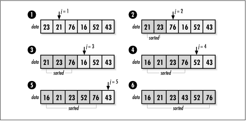

12.3 Implementation and Analysis of
Insertion Sort
Insertion sort
works fundamentally by inserting elements from an unsorted set
one at a time into a sorted set. In the implementation
presented here, both of these sets reside in
data, a single block of contiguous storage.
Initially, data contains the unsorted set
consisting of size elements. As issort runs, data
gradually becomes consumed by the sorted set until when issort returns, data
is completely sorted. Although this implementation uses
contiguous storage, insertion sort can easily be adapted to
work with linked lists efficiently, something not all sorts
can claim.
Insertion sort revolves around a single
nested loop (see Example
12.1). The outer loop, j, controls which
element from the unsorted set is currently being inserted
among the sorted elements. Since the element just to the right
of the sorted set is always the next to be inserted, we can
also think of j as the position dividing the
sorted and unsorted sets in data. For each
element at position j, an inner loop,
i, is used to cycle backward through the set
of sorted elements until the proper position for the element
is found. As we move backward through the set, each element at
position i is copied one position to the right
to make room for the insertion. Once j reaches
the end of the unsorted set, data is sorted
(see Figure
12.1).

The runtime complexity of insertion sort
focuses on its nested loops. With this in mind, the outer loop
has a running time of T (n) = n
- 1, times some constant amount of time, where n is the number of elements being
sorted. Examining the inner loop in the worst case, we assume
that we will have to go all the way to the left end of the
array before inserting each element into the sorted set.
Therefore, the inner loop could iterate once for the first
element, twice for the second, and so forth until the outer
loop terminates. The running time of the nested loop is
represented as a summation from 1 to n - 1, which results in a running
time of T (n) = (n
(n + 1)/2) - n, times some constant amount of
time. (This is from the well-known formula for summing a
series from 1 to n.) Using the
rules of O-notation, this
simplifies to O (n2). When we use insertion
sort in an incremental sort, its runtime complexity is O (n).
Insertion sort sorts in place, so its space requirement is
only that occupied by the data to be sorted.
Example 12.1.
Implementation of Insertion Sort /*****************************************************************************
* *
* ------------------------------- issort.c ------------------------------- *
* *
*****************************************************************************/
#include <stdlib.h>
#include <string.h>
#include "sort.h"
/*****************************************************************************
* *
* -------------------------------- issort -------------------------------- *
* *
*****************************************************************************/
int issort(void *data, int size, int esize, int (*compare)(const void *key1,
const void *key2)) {
char *a = data;
void *key;
int i,
j;
/*****************************************************************************
* *
* Allocate storage for the key element. *
* *
*****************************************************************************/
if ((key = (char *)malloc(esize)) == NULL)
return -1;
/*****************************************************************************
* *
* Repeatedly insert a key element among the sorted elements. *
* *
*****************************************************************************/
for (j = 1; j < size; j++) {
memcpy(key, &a[j * esize], esize);
i = j - 1;
/**************************************************************************
* *
* Determine the position at which to insert the key element. *
* *
**************************************************************************/
while (i >= 0 && compare(&a[i * esize], key) > 0) {
memcpy(&a[(i + 1) * esize], &a[i * esize], esize);
i--;
}
memcpy(&a[(i + 1) * esize], key, esize);
}
/*****************************************************************************
* *
* Free the storage allocated for sorting. *
* *
*****************************************************************************/
free(key);
return 0;
} |